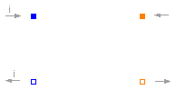
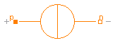

This package contains sources of magnetic potential difference:
| Name | Description |
|---|---|
| ConstantMMF | Constant magnetomotive force |
| Signal-controlled magnetomotive force | |
| ElectroMagneticConverter | Electro-magnetic energy conversion |
| ConstantFlux | Source of constant magnetic flux |
| SignalFlux | Signal-controlled magnetic flux source |
| CoilDesign | Calculation of winding parameters (wire diameter, number of turns et al.) and recalculation with optionally chosen parameters; to be adapted to particular design tasks |

Magnetic circuits under steady-state conditions, i.e. with stationary magnetic fields (change of magnetic flux dΦ/dt=0) can be described with constant sources of a magnetomotive force (mmf). Constant mmf's are imposed by
| Type | Name | Default | Description |
|---|---|---|---|
| MagnetomotiveForce | theta | Magnetomotive force [A] |
| Type | Name | Description |
|---|---|---|
| PositiveMagneticPort | p | Positive magnetic port |
| NegativeMagneticPort | n | Negative magnetic port |
model ConstantMMF "Constant magnetomotive force" extends Modelica_Magnetic.Interfaces.TwoPortComponent; parameter SI.MagnetomotiveForce theta "Magnetomotive force"; equation V_mag = theta; end ConstantMMF;
In electromagnetic devices, a change of a coil's magnetic flux linkage Ψ reacts on the electrical subsystem in that a voltage v is induced due to Faraday's law:
v = - dΨ/dt
This reaction can possibly be neglected for
| Type | Name | Description |
|---|---|---|
| PositiveMagneticPort | p | Positive magnetic port |
| NegativeMagneticPort | n | Negative magnetic port |
| input RealInput | theta | Magnetomotive force |
model SignalMMF "Signal-controlled magnetomotive force" extends Modelica_Magnetic.Interfaces.TwoPortComponent; Modelica.Blocks.Interfaces.RealInput theta "Magnetomotive force"; equation V_mag = theta; end SignalMMF;

The electro-magnetic energy conversion is given by Ampere's law and Faraday's law respectively:
V_mag = c_coupl * i*w
w * der(Φ) = -c_coupl * v
V_mag is the magnetomotive force that is supplied to the connected magnetic circuit, Φ is the magnetic flux through the associated branch of this magnetic circuit. The negative sign of the induced voltage v is due to Lenz's law. The coupling coefficient c_coupl denotes leakage: Only a portion of the coil's flux linkage Ψ contributes to the useful magnetic flux Φ in the magnetic circuit. The influence of c_coupl can be interpreted as a leakage inductance connected in series with the inductance that is effective in the magnetic circuit.
| Type | Name | Default | Description |
|---|---|---|---|
| Variables | |||
| Real | w | 1 | Number of turns |
| CouplingCoefficient | c_coupl | 1 | Ratio of coil's complete flux linkage to flux linked with the magnetic circuit; 0 < c_coupl <= 1; 1...complete flux linked with magnetic circuit [1] |
| Type | Name | Description |
|---|---|---|
| PositiveMagneticPort | p_mag | |
| NegativeMagneticPort | n_mag | |
| PositivePin | p_el | |
| NegativePin | n_el |
model ElectroMagneticConverter "Electro-magnetic energy conversion"
Interfaces.PositiveMagneticPort p_mag;
Interfaces.NegativeMagneticPort n_mag;
Modelica.Electrical.Analog.Interfaces.PositivePin p_el;
Modelica.Electrical.Analog.Interfaces.NegativePin n_el;
SI.Voltage v "Voltage";
SI.Current i "Current";
SI.MagneticPotentialDifference V_mag "Magnetomotive force";
SI.MagneticFlux Phi "Magnetic flux coupled into magnetic circuit";
Real w = 1 "Number of turns";
SI.CouplingCoefficient c_coupl = 1
"Ratio of coil's complete flux linkage to flux linked with the magnetic circuit; 0 < c_coupl <= 1; 1...complete flux linked with magnetic circuit";
//for information only:
SI.MagneticFlux Psi "Flux linkage for information only";
SI.Inductance L_stat
"Static inductance abs(Psi/i) for information only (Caution: L(i=0) set to zero!)";
equation
v = p_el.v - n_el.v;
0 = p_el.i + n_el.i;
i = p_el.i;
V_mag = p_mag.V_mag - n_mag.V_mag;
0 = p_mag.Phi + n_mag.Phi;
Phi = p_mag.Phi;
assert(c_coupl>0 and c_coupl<=1, "c_coupl out of allowed range 0 <= c_coupl <= 1");
//converter equations:
V_mag = c_coupl * i*w; // Ampere's law
w*der(Phi) = - c_coupl * v; // Faraday's law
//for information only:
Psi = w * Phi / c_coupl;
//use of abs() for positive results; due to Modelica sign conventions for flow into connectors:
L_stat = if i>0 or i<0 then abs(Psi/i) else 0;
end ElectroMagneticConverter;

Sources of a constant magnetic flux are useful for modelling of permanent magnets with Norton's magnetic equivalent circuit.
| Type | Name | Default | Description |
|---|---|---|---|
| MagneticFlux | Phi_source | 1 | Magnetic source flux [Wb] |
| Type | Name | Description |
|---|---|---|
| PositiveMagneticPort | p | Positive magnetic port |
| NegativeMagneticPort | n | Negative magnetic port |
model ConstantFlux "Source of constant magnetic flux" extends Modelica_Magnetic.Interfaces.TwoPortComponent; parameter SI.MagneticFlux Phi_source = 1 "Magnetic source flux"; equation Phi = Phi_source; end ConstantFlux;
This source of a magnetic flux is intended for test purposes, e.g. for simulation and subsequent plotting of a softmagnetic material's magnetisation characteristics if used together with a nonlinear reluctance element.
| Type | Name | Description |
|---|---|---|
| PositiveMagneticPort | p | Positive magnetic port |
| NegativeMagneticPort | n | Negative magnetic port |
| input RealInput | Phi_source | Imposed magnetic flux |
model SignalFlux "Signal-controlled magnetic flux source" extends Modelica_Magnetic.Interfaces.TwoPortComponent; Modelica.Blocks.Interfaces.RealInput Phi_source "Imposed magnetic flux"; equation Phi = Phi_source; end SignalFlux;
This model exemplarily shows dimensioning of a winding (wire diameter, number of turns) based on desired operating conditions (voltage, temperature, current density, conductor filling factor) for a given cross-section area of the winding. It can be modified according to the parameters given and sought after for a particular design project.
The calculated winding resistance and number of turns can be used as input parameters to the electrical subsystem
of a device to be modelled. Operating voltage U can be minimum, nominal and maximum voltage respectively as specified for a particular design project. In conjunction with the setting of the operating temperature T_opCelsius, this enables for analysis of the device under worst-case conditions (e.g. minimum required magnetomotive force, maximum allowed ohmic losses, minimum and maximum force respectively).
For manufacturing of a winding, the obtained wire diameter d_wireCalculated must be rounded to that of an available wire. In order to analyse the influence of this rounding, one can enter the chosen wire diameter d_wireChosen and number of turns w_chosen as optional input. Calculation of the resulting winding parameters enables for comparison with the ones obtained otherwise.
| Type | Name | Default | Description |
|---|---|---|---|
| Resistivity | rho_20 | 0.0178e-6 | Resistivity of conductor material at 20°C [Ohm.m] |
| TemperatureCoefficient | alpha | 0.0039 | Temperature coefficient of conductor material's resistivity [1/K] |
| CelsiusTemperature | T_opCelsius | 20 | Winding's operating temperature [degC] |
| Height | h_w | Height of winding's cross-section [m] | |
| Breadth | b_w | Breadth of winding's cross-section [m] | |
| Length | l_avg | Average length of one turn [m] | |
| Voltage | U | Operating voltage (nominal/ minimum/ maximum voltage depending on design objective) [V] | |
| CurrentDensity | J_desired | 4e6 | DESIRED current density at operating temperature and voltage resp. [A/m2] |
| Real | c_condFillChosen | 0.6 | CHOSEN conductor filling factor = total conductor area without insulation/ total winding area |
| Chosen feasible parameters (optional) | |||
| Diameter | d_wireChosen | d_wireCalculated | CHOSEN available wire diameter (without insulation) [m] |
| Real | w_chosen | w_calculated | CHOSEN number of turns |
model CoilDesign
"Calculation of winding parameters (wire diameter, number of turns et al.) and recalculation with optionally chosen parameters; to be adapted to particular design tasks"
parameter SI.Resistivity rho_20 = 0.0178e-6
"Resistivity of conductor material at 20°C"; //default material: Copper
parameter Utilities.TemperatureCoefficient alpha = 0.0039
"Temperature coefficient of conductor material's resistivity"; //default material: Copper
parameter SI.CelsiusTemperature T_opCelsius = 20
"Winding's operating temperature";
final parameter SI.Resistivity rho = rho_20 * (1 + alpha *(T_opCelsius - 20))
"Resistivity at operating temperature";
parameter SI.Height h_w "Height of winding's cross-section";
parameter SI.Breadth b_w "Breadth of winding's cross-section";
final parameter SI.Area A_w = h_w * b_w "Cross-section area of winding";
parameter SI.Length l_avg "Average length of one turn";
parameter SI.Voltage U
"Operating voltage (nominal/ minimum/ maximum voltage depending on design objective)";
parameter SI.CurrentDensity J_desired = 4e6
"DESIRED current density at operating temperature and voltage resp.";
parameter Real c_condFillChosen = 0.6
"CHOSEN conductor filling factor = total conductor area without insulation/ total winding area";
final parameter Real w_calculated = U/ (rho * l_avg * J_desired)
"CALCULATED number of turns";
final parameter SI.Diameter d_wireCalculated = sqrt(4 * A_w * c_condFillChosen /(pi * w_calculated))
"CALCULATED wire diameter (without insulation)";
final parameter SI.Area A_wireCalculated = pi * d_wireCalculated^2 / 4
"Calculated wire cross-section area";
final parameter SI.Resistance R_calculated = rho * w_calculated * l_avg / A_wireCalculated
"Winding resistance at operating temperature and voltage resp. with CALCULATED number of turns and wire diameter";
final parameter SI.Power P_calculated = U^2 / R_calculated
"Winding's ohmic losses at operating temperature and voltage resp. with CALCULATED number of turns and wire diameter";
parameter SI.Diameter d_wireChosen = d_wireCalculated
"CHOSEN available wire diameter (without insulation)";
parameter Real w_chosen = w_calculated "CHOSEN number of turns";
final parameter SI.Area A_wireChosen = pi * d_wireChosen^2 / 4
"Wire cross-section area resulting from CHOSEN wire diameter";
final parameter SI.Resistance R_actual = rho * w_chosen * l_avg / A_wireChosen
"Winding resistance at operating temperature and voltage resp. resulting from CHOSEN number of turns and wire diameter";
final parameter SI.Power P_actual = U^2 / R_actual
"Winding's ohmic losses at operating temperature and voltage resp. resulting from CHOSEN number of turns and wire diameter";
final parameter SI.CurrentDensity J_actual = U * 4/(R_actual * pi * d_wireChosen^2)
"Current density at operating temperature and voltage resp. resulting from CHOSEN number of turns and wire diameter";
final parameter Real c_condFillActual = w_chosen * pi * d_wireChosen^2 /(4 * A_w)
"Conductor filling factor resulting from CHOSEN number of turns and wire diameter";
end CoilDesign;